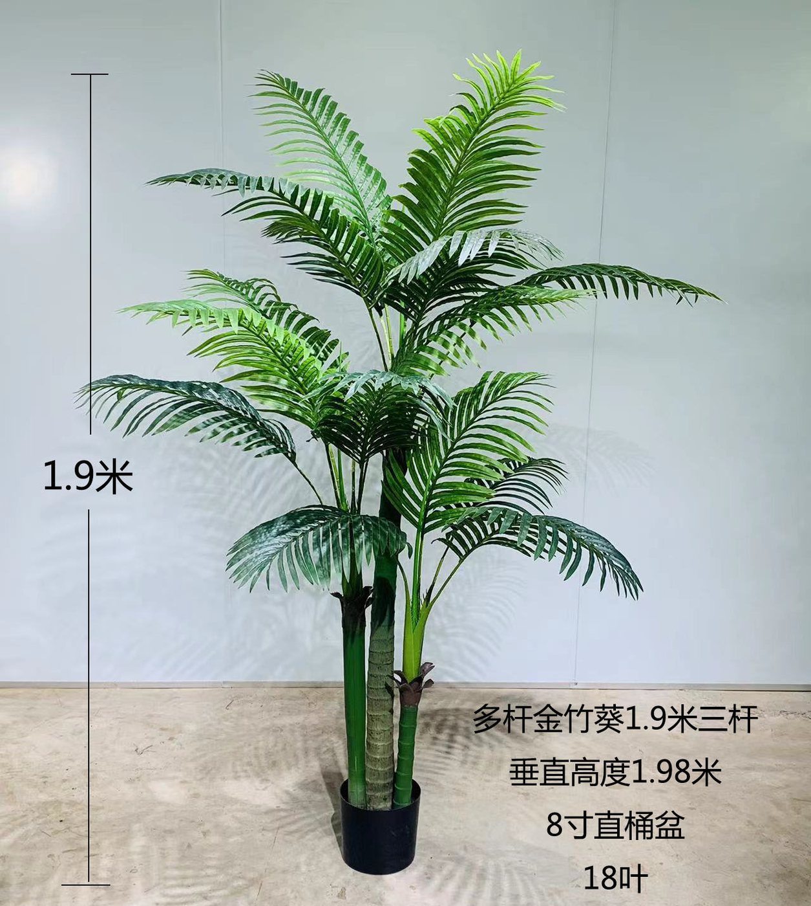
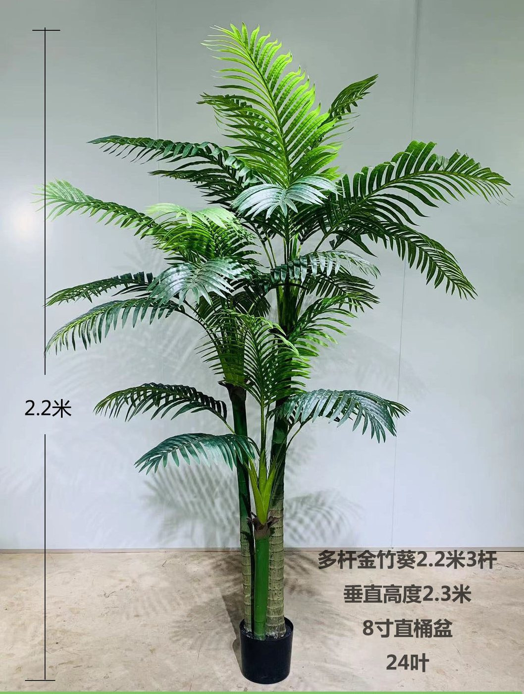
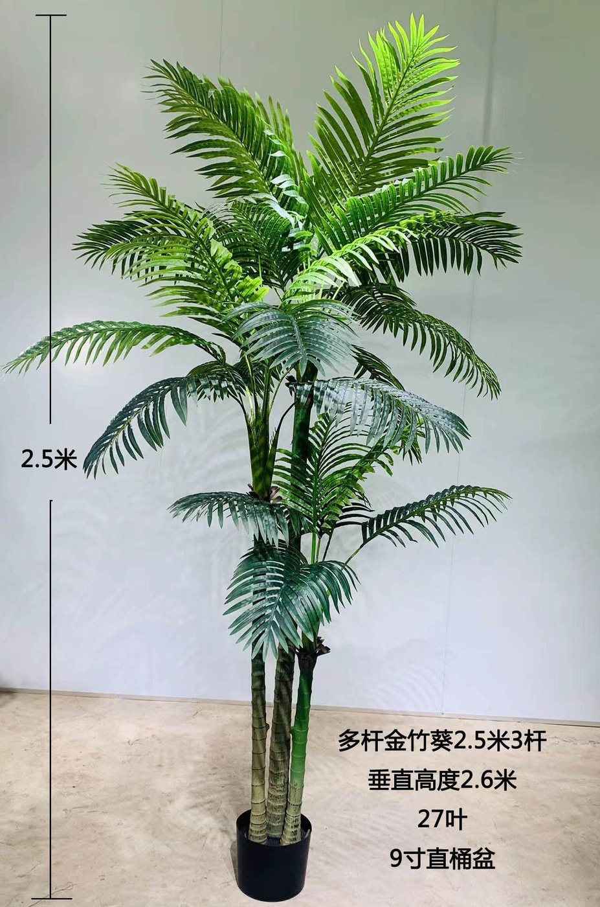

Palms & Tropicals
Multi-Stem Golden Bamboo Palm
Multi-Stem Golden Bamboo Palm is a tropical focal point suitable for hotel lobbies, resorts, and large indoor planters. The photographs show examples in heights from 190–280 cm. This is a factory photograph of the actual product; exact dimensions, packing, MOQ, lead time and price are confirmed by the seller on inquiry.
Opens your email application; sending happens there.
Product information
Multi-Stem Golden Bamboo Palm is a tropical focal point suitable for hotel lobbies, resorts, and large indoor planters. The photographs show examples in heights from 190–280 cm. This is a factory photograph of the actual product; exact dimensions, packing, MOQ, lead time and price are confirmed by the seller on inquiry.
Specifications
| Heights (from photos) | 190–280 cm |
|---|---|
| Product code | LC-N051 |